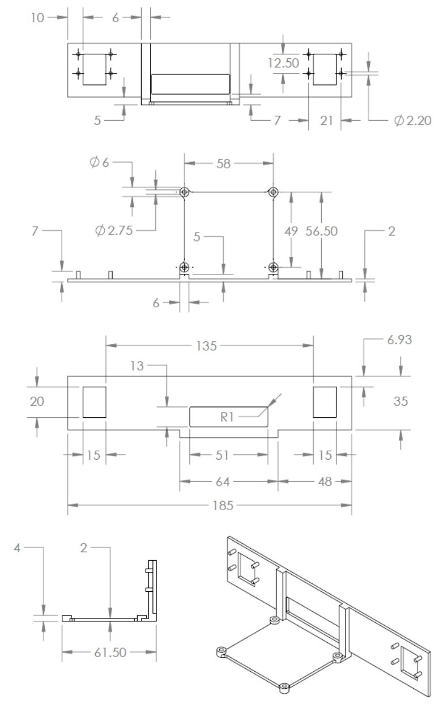
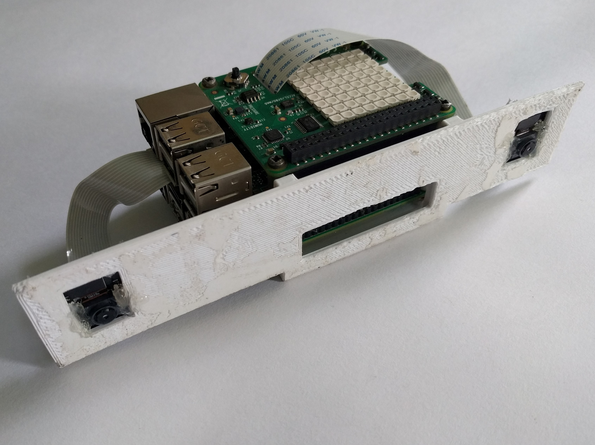
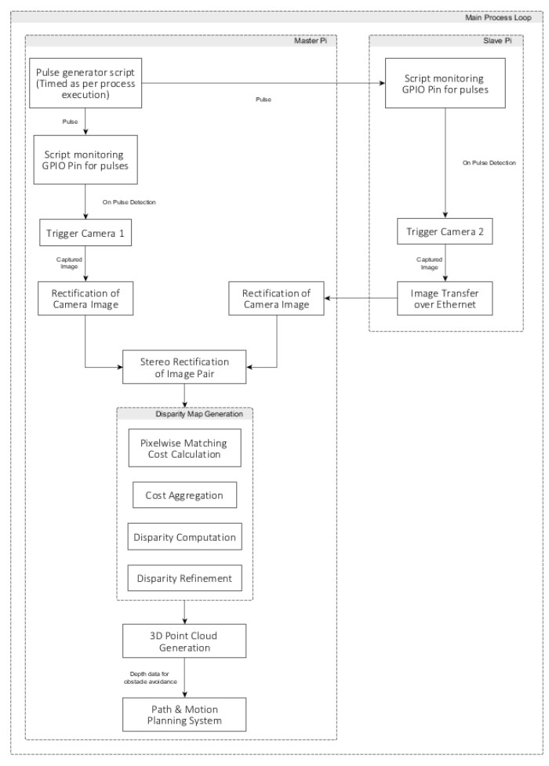

This project aims at performing point-cloud construction through 3D Stereo-mapping using two Raspberry Pi's, each with a connected Pi Camera CSI module.
The pi's and the cameras are fixed in position by attaching to a custom designed and then 3D printed fixture. Also, we use the
OpenCV library for processing images (more specifically for the implementations of the semi-global block matching algorithm).
The most basic requirement is a frame to mount the electronics on to.
So, for this purpose I've designed a frame (which can be 3D-printed).
It has a baseline distance of 15 cm (see the figure below).

Figure: the engineering drawing of the frame. All dimensions are in mm.
Note: in the ensuing disussion, I will refer to Pi 2 as Slave Pi and Pi 3 as Master Pi.
All the image processing is performed on the Master Pi.
The CSI Camera modules are attached to each of the Pi's.
And the two Pi's are connected to each other via an ethernet cable.
Finally, the entire setup is then mounted onto the 3D printed frame.

Figure: the engineering drawing of the frame. All dimensions are in mm.
Also, Make sure that the two cameras are firmly fixed to the frame.
Any movement of cameras relative to each other might require re-doing of the calibration process.
Flash two SD cards with the Rasbpian OS.
(You might follow the instaructions here).
Put the SD card into the Pi's and boot into it.
Now, connect the Pi-NoIR Camera modules to each of the borads.
Then in the device preferences enable the Camera, GPIO and SSH ports.
Note: you may also access the device preferences using the following command in the terminal and follow the instructions accordingly:
$> sudo raspi-config
After enabling the Camera, SSH and GPIO ports, run the following commands, to install the libraries for accessing the Cameras and Sense Hat.
$> sudo apt-get update
$> sudo apt-get upgrade
The above commands will install the required python libraries and also update the raspbian OS.
Now, we need to setup OpenCV on Raspberry Pi, we will be compiling OpenCV from source code and installing it.
The steps for setting up OpenCV 3 in Raspberry Pi 3 model B are available at this link on pyimagesearach. Now that we have installed OpenCV and device drivers, we can move on to software setup.
Camera Synchronization
Stereo vision depends heavily on synchronization of images taken from he two cameras.
Since, we are using two boards it is necessary for us to synchronize the imgae capture process.
This is especially needed for setup's to be mounted on mobile platforms (such as drones, robots, etc.).
We have two suggested methods for performing camera synchronization
NTP (Network Time Protocol) synchronization
This method useses synchronized time to perform cameras synchronization. We run two independent
scripts on the two borads, each of which takes pictures at fixed intervals of time.
This method is accurate but we can't control when to take pictures. So, we won't be able to
correct camera triggers for any unexpected changes in execution times.
Hardware (pulse-based) Synchronization:
This method uses pulses of voltage for triggering the cameras. We run independent scripts on the each
of Pi's, which moniter hte GPIO pins for pulses.
This method is simple and robust. This also allows for controlling when the camera's are
tirggered. The figure below shows the hardware trigger method.
Note: the implementation of the above two methods is still under development.
NTP Synchronization
For NTP Synchronization, we setup and NTP server on the Master Pi and synchronize time on the Slave Pi.
For this, follow the following steps:
Setup static IP address for each of the Pi's.
Append the following lines to etc/dhcpcd.conf on Master Pi.
Setup NTP Server-client on Master and Slave Pi's respectively.
Replace the file etc/ntp.conf with the file in piConfig/ directory of this repository.
The files are named as per the Pi on which they belong, i.e. npt.conf.master to replace etc/ntp.conf on the Master Pi, and similarly for the Slave Pi.
Now, to force synchronization of time on Slave Pi, run the following commands.
$> sudo service ntp stop
$> sudo ntpd -gq
$> sudo service ntp start
Note: the time on Master Pi need not be in sync with the real-world time.
But the time on the Slave Pi must be synchronized with that of the Master Pi, and the above steps ensure that.
Hardware Synchronization

Figure: this figure shows a possible schema for the implementation of hardware synchronization system.
Software Installation and Calibration
Clone the repository at a convenient location on both the Pi's.
In this example we have cloned the repository at ~/Documents/ directories of Master and Slave Pi's respectively.
Run the following command to clone the repositroy:
Now, we need to perform camera calibration aand stereo calibration.
This step requires a checkerboard pattern.
Print the checkerboard pattern in calibData/res/checkerboard.pdf onto a flat surface and run the following commands and follow the on-screen instructions.
Note: for better results during calibration hold the checherboard pattern as close to the camera as possible.
And make sure that the checkerboard pattern is on a flat surface.
Once the calibration has completed successfully.
Start the application by running the RUN.py file.
Run the following command in terminal and follow the onscreen instructions.
$> python3 RUN.py
There are some test files available in the test/ directory of the repository.
Use them for testing the calibatration and performance of the sytem.